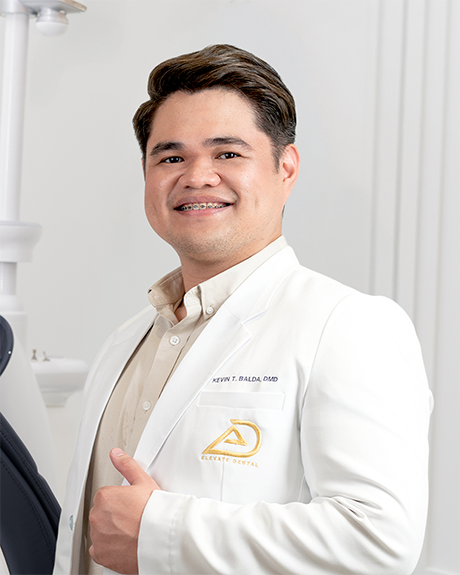
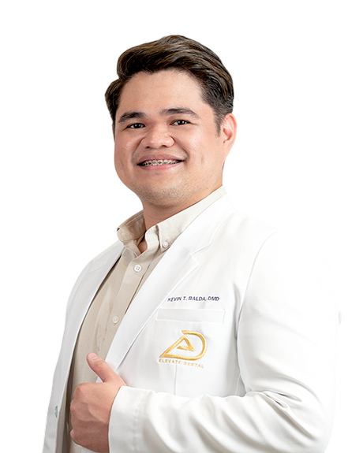
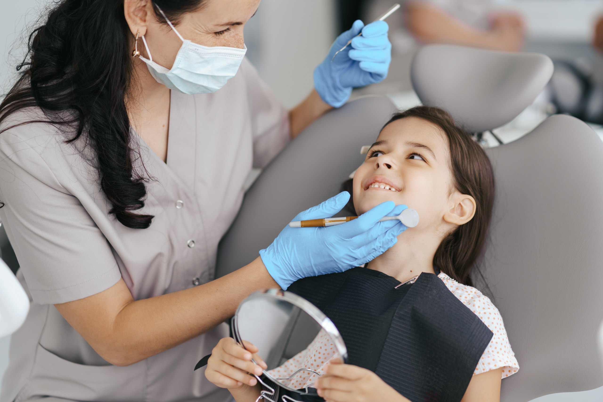
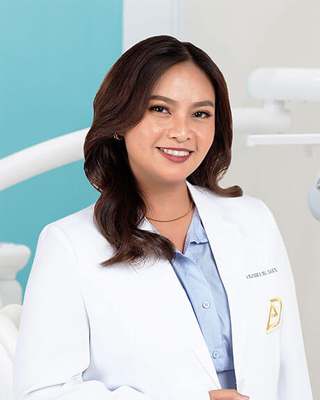
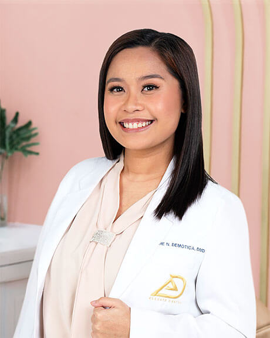
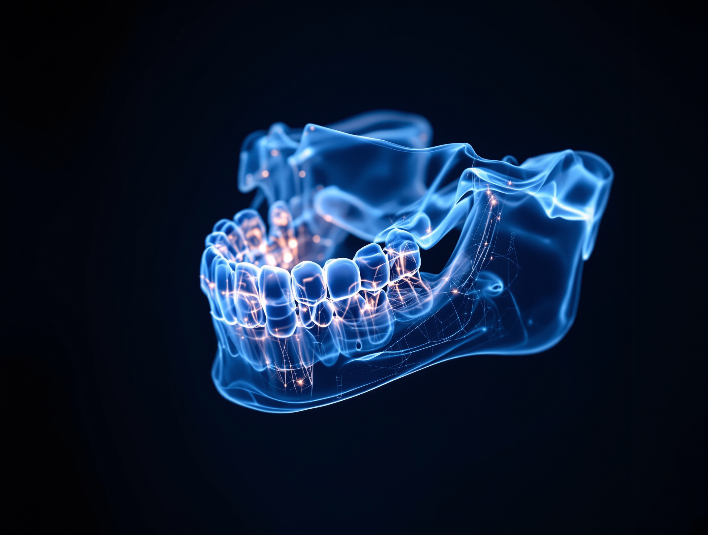
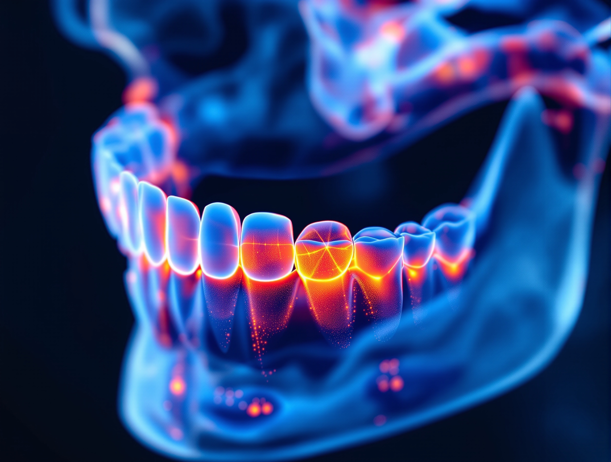
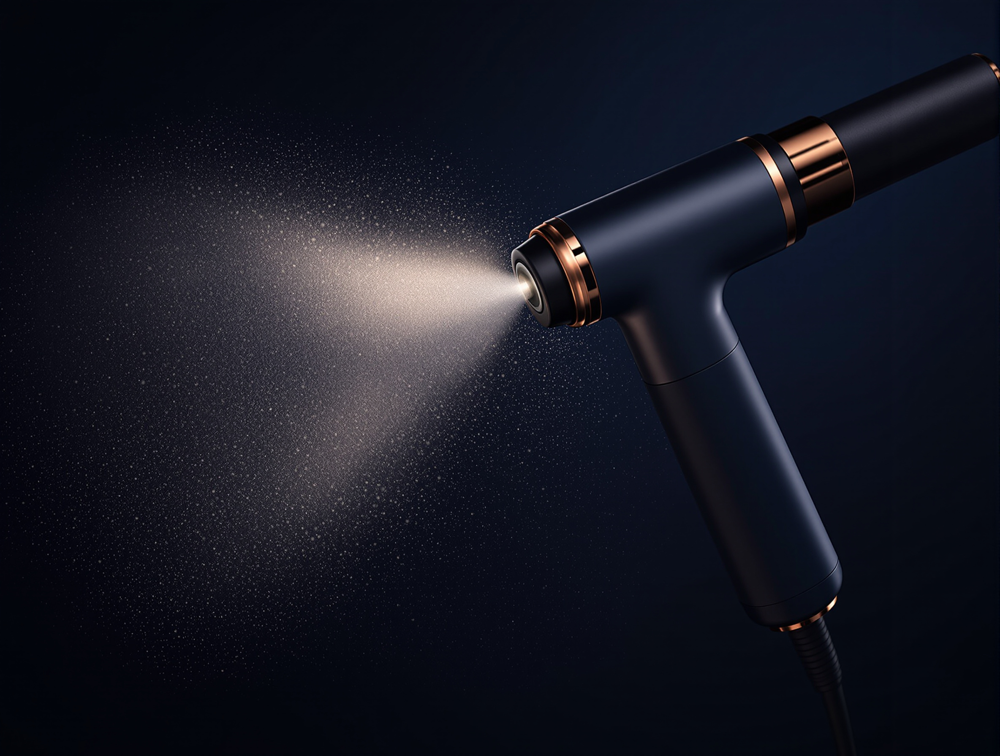
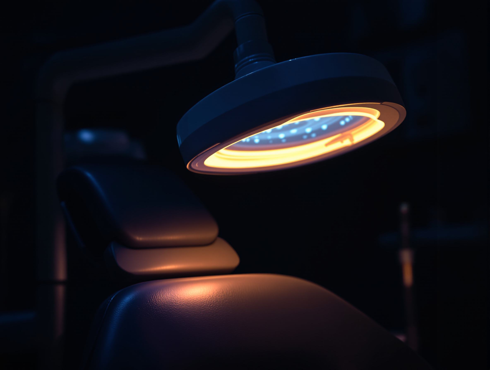

Dr. Kevin Balda

Complex dental work should not mean being sent somewhere else.
Book an AppointmentElevating People's Lives, One Smile at a Time.
The clinician your case needs already works here, at one of four clinics across Metro Manila.
Bring the thing you have been putting off. It is assessed, sequenced and carried out by the people who will each take a stage of it, and the plan is written once.

Each figure in the panel below was counted on the practice's own published records. Every one of them is handed back to you further down the page as the thing itself, rather than repeated at you as a number.
Twelve of the clinicians on the published roster, in alphabetical order by surname. It is a roster and not a ranking, and the full list is one click away, searchable by name.


Dr. Kevin Balda

Dr. Vicenta Angelou De Leon

Dr. Nuella del Castillo

Dr. Kyle Nathan Delfin

Dr. Claire Dianne Demotica

Dr. Diane Yvone Domondon

Dr. Aina Edquiban
Dr. Theresa Gaurano
Dr. Derrick Dee Haluag

Dr. Glaisa Mae Lavarias

Dr. Johnnie Rey Sanchez, DMD, MScD

Dr. Esther Tan, M.S.C.D.
Nine fields, each with its own hub. Open a hub to read the field, or go straight to a treatment you already have a name for.
Oral prophylaxis, dental fillings, and AirFlow (guided biofilm therapy).
Porcelain veneers, zirconia veneers, direct veneers, and teeth whitening.
Dental braces, and Invisalign (Clear Aligners) planned from a digital scan.
Dental crowns, dental bridges, complete dentures, and removable partial dentures.
Dental sealants, and fluoride treatment for a child's first molars.
Root canal treatment planned against a three dimensional image of the root.
Scaling and root planing worked from a full gum chart rather than an estimate.
Digital radiography the image every other field on this list reads from.
These eight are the systems the practice publishes as installed. Each is named rather than called advanced, and the technology page sets out what each one is actually used for.

A three dimensional scan of bone, roots and nerve canals. Installed at all four branches, which is why an implant or a root canal can be planned at whichever one you attend.
Every branchA digital impression taken with a handheld wand. No tray, and no putty setting in your mouth.
Scans the face in three dimensions, so veneers and smile design are planned against your own facial proportions rather than against an average.

Records how hard your teeth meet and in what order they meet. That is the part articulating paper has never been able to measure.
Used for soft tissue work, so some procedures need less cutting and less stitching.

AirFlow (guided biofilm therapy)
Removes biofilm with a fine powder and warm water rather than by scraping every surface.

An in-chair whitening system, run in a single appointment under supervision.
Cuts bone by ultrasonic vibration, which leaves soft tissue alone while it works.
Every fee is quoted per treatment after a clinical assessment, so the number you are given is the number for your mouth.
The prices page carries the model in full, and the new patient guide sets out what a first visit involves before any number is discussed.
Your case is never referred out.
At a practice built around one dentist, anything past that dentist's field goes to a stranger. You start over: the history again, the imaging again, the explanation of what you actually wanted again. The plan that comes back was written by somebody who was not in the room for the first half of it.
Here the second opinion is in the next room. Work that crosses surgery, then orthodontics, then a final restoration is sequenced before the first appointment, by the clinicians who will each take one stage of it. The scans travel with the file instead of being taken twice.

It does not mean every service in dentistry is offered here. Sedation dentistry and an in-house laboratory are not among them. The claim is scoped to the clinical fields named in the next section, and it is accurate at that scope and no wider.
Stated plainly
That is a structural argument rather than a slogan, and it is the reason every band under this one hands you the thing being counted instead of the count.
There are 74 published patient testimonials on record for this practice, and a large library of documented case photography. Neither is reprinted anywhere on this site.
Republishing somebody's words, or a photograph of the inside of their mouth, needs that person's documented permission to do so on a new property. That permission has not been produced, so the material stays where the patients originally agreed to it and does not travel here.
This is a consent gap and not a shortage of evidence. The day the releases are on file, the gallery gets built treatment by treatment, an implant case with implants and an aligner case with aligners, at matched framing and matched scale so the comparison is the dentistry rather than the lighting.

The weeks below are not the same as one another, so read the branch you intend to visit rather than the first one. Bonifacio Stopover is the one that closes on Sundays.
2F Mitsukoshi BGC, 8th Avenue corner 36th Street, Grand Central Park, Taguig
4F East Wing, Shangri-La Plaza, EDSA corner Shaw Boulevard, Ortigas, Mandaluyong
Unit R303, 3rd Floor, Bonifacio Stopover Pavilion, Bonifacio Global City, Taguig
2nd Floor, 2225 Commerce Mall, Alabang Town Center, Ayala Alabang, Muntinlupa 1780
Public holidays
Holiday opening can differ from the weeks above and the holiday list has never been sent to us, so call ahead before you travel on one.
A dental tourism programme built as a five-step journey, with a dedicated Dental Tourism Officer as one point of contact the whole way through it.
Consultation
held remotely before you commit to any dates.
Smile design
planned against your own scans and facial proportions.
Travel arrangements
coordinated around the chair days the plan needs.
Treatment
sequenced so the visit is used rather than spread across it.
Maintenance recall
agreed before you fly home.
The clinical planning starts before you land. Your imaging is reviewed, the sequence is set, and the number of chair days the work needs is agreed while you are still choosing dates, so the trip is built around the treatment rather than the other way round.
What the officer coordinates is the schedule and the sequence. Nothing on this site claims a travel agency sits behind it, and the tourism page says the same thing at greater length.
Read before you fly
The self-pay condition in the band below applies to international patients in exactly the same way, and it is the one thing worth settling before a flight is booked.
An illustration of the journey. It is not a photograph of this practice, of any branch, or of a specific flight.
Elevate Dental does not accept HMO or dental insurance. All treatment is self-pay.
That is the first thing most patients in this city ask, so it is answered on the front page instead of at the counter. Every fee is settled directly with the branch that treats you.
Accepted at the clinic
Fees are quoted in Philippine pesos.